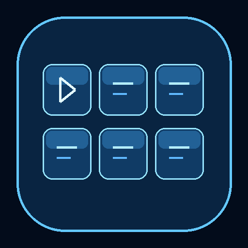

Tap a button to customize it. Use position controls in the editor to rearrange.
Start Start-EchoDeck.cmd on Windows. Use the same HTTPS laptop address and access key as EchoRemote.
The host runs on the same port as EchoRemote. Close the older host before starting EchoDeck. EchoDeck's host also supports EchoRemote.
Layouts stay on this device. Exports include your buttons and saved text, but never your laptop address or access key.
EchoDeck detects common Windows apps. To add a game or another program, run Add-App.cmd in the Windows bundle, choose its EXE, then refresh the PC app list in the button editor.
Custom hotkeys act on the focused PC application. Configure matching hotkeys in OBS, Discord, or your game first.
EchoDeck 1.0.2 · Android 8+ · Windows 10/11 hostEcho original interface. No Elgato integration or affiliation.